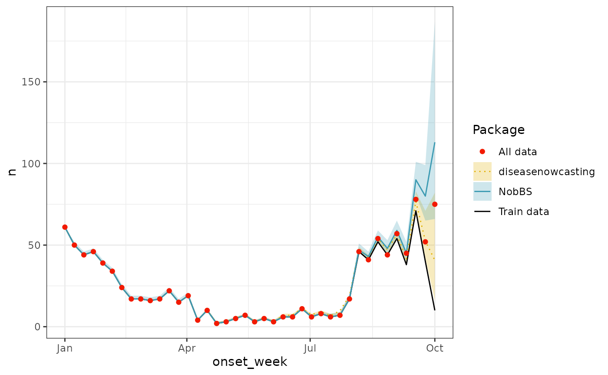

Comparison to other methods
Comparison-to-other-methods.RmdIn this article we compare our package against the results from:
- The NobBS package.
- The nowcaster package.
- The nowcasting package.
- The epinowcast package.
NobBS
Here we reproduce the example from the README.md
file:
library(NobBS)
data("denguedat")
now <- as.Date("1990-10-01")
test_nowcast <- NobBS(data = denguedat, units = "1 week", now = now,
onset_date = "onset_week", report_date = "report_week")
#> Computing a nowcast for 1990-10-01and compare against the diseasenowcasting package:
library(diseasenowcasting)
library(posterior)
#> This is posterior version 1.6.0
#>
#> Attaching package: 'posterior'
#> The following objects are masked from 'package:stats':
#>
#> mad, sd, var
#> The following objects are masked from 'package:base':
#>
#> %in%, match
library(tidyverse)
#> ── Attaching core tidyverse packages ──────────────────────── tidyverse 2.0.0 ──
#> ✔ dplyr 1.1.4 ✔ readr 2.1.5
#> ✔ forcats 1.0.0 ✔ stringr 1.5.1
#> ✔ ggplot2 3.5.1 ✔ tibble 3.2.1
#> ✔ lubridate 1.9.3 ✔ tidyr 1.3.1
#> ✔ purrr 1.0.2
#> ── Conflicts ────────────────────────────────────────── tidyverse_conflicts() ──
#> ✖ dplyr::filter() masks stats::filter()
#> ✖ dplyr::lag() masks stats::lag()
#> ℹ Use the conflicted package (<http://conflicted.r-lib.org/>) to force all conflicts to become errors
predictions <- nowcast(denguedat, "onset_week", "report_week",
now = now, method = "variational",
priors = set_priors(nu_is_constant = F))
#> ℹ Computing a nowcast for 1990-10-01 per "weeks"
#> ℹ Assuming data is linelist-data where each observation is a test. If you are working with count-data set `data_type = "count"`
#> Chain 1: ------------------------------------------------------------
#> Chain 1: EXPERIMENTAL ALGORITHM:
#> Chain 1: This procedure has not been thoroughly tested and may be unstable
#> Chain 1: or buggy. The interface is subject to change.
#> Chain 1: ------------------------------------------------------------
#> Chain 1:
#> Chain 1:
#> Chain 1:
#> Chain 1: Gradient evaluation took 0.000733 seconds
#> Chain 1: 1000 transitions using 10 leapfrog steps per transition would take 7.33 seconds.
#> Chain 1: Adjust your expectations accordingly!
#> Chain 1:
#> Chain 1:
#> Chain 1: Begin eta adaptation.
#> Chain 1: Iteration: 1 / 250 [ 0%] (Adaptation)
#> Chain 1: Iteration: 50 / 250 [ 20%] (Adaptation)
#> Chain 1: Iteration: 100 / 250 [ 40%] (Adaptation)
#> Chain 1: Iteration: 150 / 250 [ 60%] (Adaptation)
#> Chain 1: Iteration: 200 / 250 [ 80%] (Adaptation)
#> Chain 1: Success! Found best value [eta = 1] earlier than expected.
#> Chain 1:
#> Chain 1: Begin stochastic gradient ascent.
#> Chain 1: iter ELBO delta_ELBO_mean delta_ELBO_med notes
#> Chain 1: 100 -802.912 1.000 1.000
#> Chain 1: 200 -698.473 0.575 1.000
#> Chain 1: 300 -684.705 0.390 0.150
#> Chain 1: 400 -679.918 0.294 0.150
#> Chain 1: 500 -678.219 0.236 0.020
#> Chain 1: 600 -681.343 0.197 0.020
#> Chain 1: 700 -665.076 0.173 0.020
#> Chain 1: 800 -663.798 0.151 0.020
#> Chain 1: 900 -667.709 0.135 0.007 MEDIAN ELBO CONVERGED
#> Chain 1:
#> Chain 1: Drawing a sample of size 1000 from the approximate posterior...
#> Chain 1: COMPLETED.
#> Warning: Pareto k diagnostic value is 3.11. Resampling is disabled. Decreasing
#> tol_rel_obj may help if variational algorithm has terminated prematurely.
#> Otherwise consider using sampling instead.which, after formating,
#Get the predicted values in a nice format
predicted_values <- predictions$generated_quantities |>
posterior::as_draws() |>
posterior::subset_draws("N_predict") |>
posterior::summarise_draws() |>
dplyr::mutate(.strata = as.numeric(stringr::str_remove_all(variable,".*\\[.*,|\\]"))) |>
dplyr::mutate(.tval = as.numeric(stringr::str_remove_all(variable,".*\\[|,.*\\]"))) |>
dplyr::left_join(
predictions$data$preprocessed_data |>
dplyr::distinct(.tval, onset_week)
)
#> Joining with `by = join_by(.tval)`
obs <- predictions$data$preprocessed_data |>
dplyr::group_by(onset_week) |>
dplyr::summarise(n = sum(n))Result in a better prediction than the NobBS default
one:
# Create plot
ggplot() +
geom_ribbon(aes(x = onset_week, ymin = q5, ymax = q95, fill = "diseasenowcasting"),
data = predicted_values, alpha = 0.25) +
geom_ribbon(aes(x = onset_date, ymin = lower, ymax = upper, fill = "NobBS"),
data = test_nowcast$estimates, alpha = 0.25) +
geom_line(aes(x = onset_week, y = n, color = "Train data", fill = "Train data"), data = obs) +
geom_line(aes(x = onset_week, y = mean, color = "diseasenowcasting"),
data = predicted_values, linetype = "dotted") +
geom_line(aes(x = onset_date, y = estimate, color = "NobBS"), data = test_nowcast$estimates) +
geom_point(aes(x = onset_week, y = n, color = "All data", fill = "All data"), data =
denguedat |>
dplyr::group_by(onset_week) |>
dplyr::count() |>
dplyr::filter(onset_week <= !!now)) +
theme_bw() +
scale_color_manual("Package",
values = c("NobBS" = "#3B9AB2", "diseasenowcasting" = "#E1AF00",
"All data" = "#F21A00",
"Train data" = "black")) +
scale_fill_manual("Package",
values = c("NobBS" = "#3B9AB2", "diseasenowcasting" = "#E1AF00",
"All data" = "#F21A00",
"Train data" = "black"))